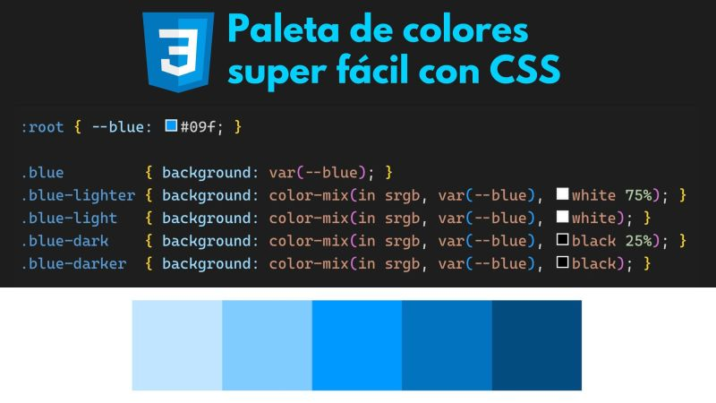
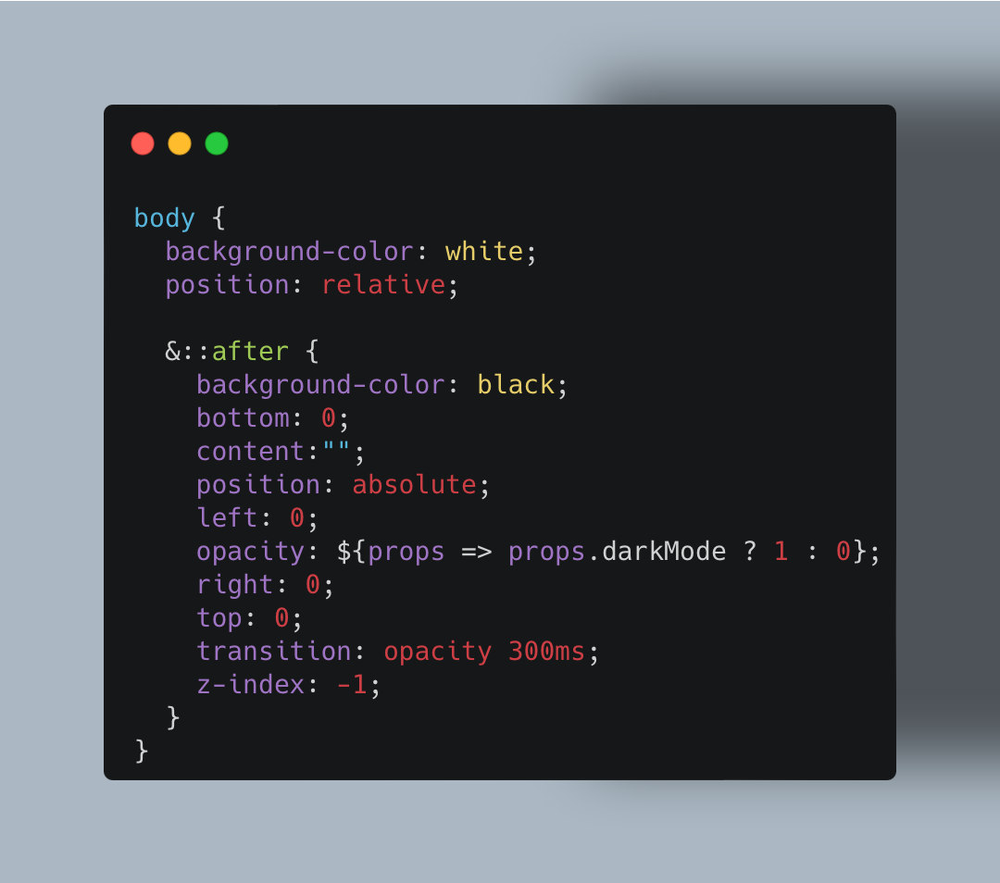
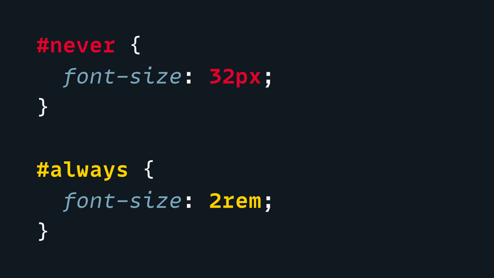
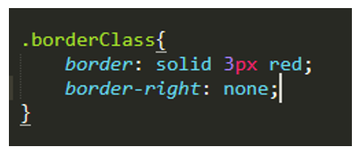

INFORMACIÓN JS Y CSS
CSS (Cascading Style Sheets o Hojas de Estilo en Cascada) es un lenguaje utilizado para definir el diseño y la presentación de páginas web. Se encarga de controlar aspectos visuales como colores, tipografías, márgenes, alineaciones, animaciones y la disposición de los elementos en la pantalla.

JavaScript es un lenguaje de programación utilizado para agregar interactividad y dinamismo a las páginas web. Permite manipular el contenido HTML y CSS, responder a eventos del usuario y comunicarse con servidores para actualizar la información sin recargar la página.

| Nombre del atributo | Descripción | Valores posibles | Ejemplo de uso | Imagen representativa | Fuente de información |
|---|---|---|---|---|---|
| color | Define el color del texto. | red, blue, #FF0000, rgb(255,0,0) | color: red; |  | MDN color |
| background-color | Define el color de fondo de un elemento. | yellow, #FFFF00, rgba(255,255,0,0.5) | background-color: yellow; |  | MDN background-color |
| font-size | Define el tamaño de la fuente del texto. | 12px, 1.5em, 150% | font-size: 16px; |  | MDN font-size |
| border | Define el borde de un elemento. | 1px solid black, 2px dashed red | border: 2px solid blue; |  | MDN border |